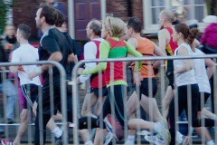

Parkrun
Half Marathon
Athletic Club
MK Sports
Big Fun Run
Events
The Club is run on a rather informal basis in that there are no fixed meeting times or formally arranged groups, or club fees!
Runners usually run at lunchtimes and meet each other by informal arrangement at the pavilion. In general there is a group (mainly men) that leaves for a run at about 12.20pm and then other groups (mainly women) that leave between 12.30pm and 12.45pm.
From time to time there are more organized training sessions to do fartlek or interval training.
Each month a handicap race is arranged so that runners can compete with one another. These races are either 5 miles, 10km or 5km.
Ut lacus orci, aliquam a lacus sit amet, aliquet pulvinar odio. Integer quis ex et nulla vestibulum consectetur quis et quam. Donec eleifend felis non ultrices pharetra. Vivamus non dolor aliquet, suscipit nisi sit amet, vehicula nisl. In nec pretium mi. Aenean sit amet arcu maximus, gravida orci non, dictum odio. Curabitur a nunc ipsum. Nunc sit amet leo urna. Donec in sollicitudin mi. Proin ac lectus orci. Sed scelerisque gravida est, at posuere orci malesuada vel.